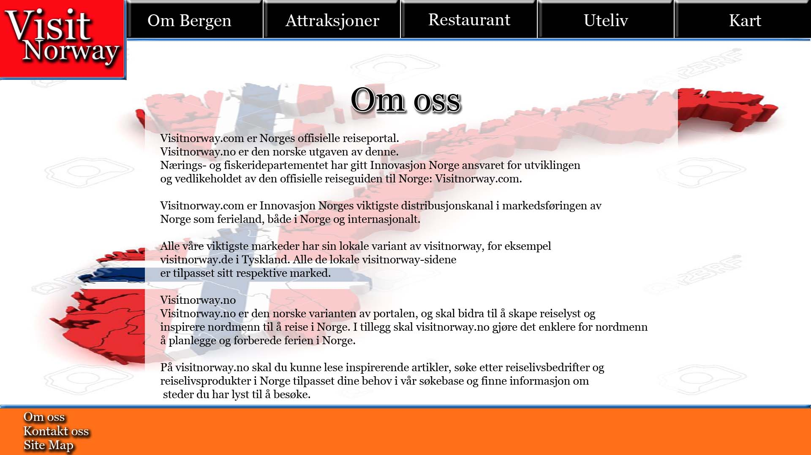

-
Hovedside - Index.html:
Når turister besøker siden vil de bli presentert med bilde som er vist under. Eneste innholde som skal vises på denne siden er et slideshow som viser bilder fra Bergen, samt et velkomstord og noen fakta/historie om Bergen. Bildene skal være med på å gi turister en følelse av at de får en opplevelse av byen og skape en stemning som fremmer reiselyst.
Målet med denne siden er å kunne presentere Bergen på en enkel og oversiktlig måte uten at man skal forville seg i mye informasjon første gang du besøker siden. Den enkle forsiden, sammen med et fargerikt visuelt inntrykk, vil forhåpentligvis gjøre at turister ønsker å finne ut mer om byen. Ved å da ha et design med en meny som konkret beskriver hva informasjon som er tilgjengelig, vil dette gjøre at brukere får et inntrykk av at siden er enkel å ta i bruk. Ved å benytte oss av bilder fra byen ønsker vi å fange brukerens oppmerksomhet. Ved å holde teksten til et minimum vil det øke appelleringsevnen til bildet.
-
Om Bergen - Om_Bergen.html
Her kommer utfyllende informasjon om byen til å bli presentert. Det vil være informasjon angående historien og opphavet til byen, samt en beskrivelse over arrangementer byen pleier å arrangere, slik som Tallship’s races, ØL-festival osv. Her kan turister og andre finne informasjon som gjør at de kan planlegge en reise til byen som bidrar til en opplevelse utenom det vanlige byen har å tilby.
-
Attraksjoner - Attraksjoner.html:
Denne siden vil fokusere på å presentere de ulike attraksjonene i Bergen på en enkel og oversiktlig måte. Dette blir oppfylt ved at hver attraksjon får sin egen seksjon på hovedsiden attraksjoner. Her blir de presentert med en kort beskrivende tekst som forklarer hva attraksjonen kan tilby. Det vil også være bilder under beskrivelsen som skal være med på å gi et inntrykk av hva man har i vente om man besøker attraksjonen. Under drop-down-menyen Attraksjoner skal man kunne klikke seg inn for å finne mer informasjon om de ulike attraksjonene. Det skal også være mulig ved å kunne klikke på navnet til attraksjonen. Ved å benytte bilder til beskrivelsen ønsker vi å skape en økt interesse for attraksjonen hos våre besøkende. Denne siden vil kunne bidra til at turister som ønsker en rask oversikt over Bergen sine ulike attraksjoner vil kunne finne det her uten å måtte gå mange omveier eller ende opp med å gå seg vill på nettsiden.
-
Restaurant - Restaurant.html:
Restaurant.html har samme design som den over, forskjellen er at denne siden presenterer restauranter og har en annen overskrift. Denne siden vil også ha javascript innebygd slik at det skal være mulig å sortere restauranter på navn, kategori og pris. På denne siden vil restaurantene kunne promotere seg selv mot et bredere publikum enn bare lokalbefolkningen og det vil for turister være mulig å enkelt få en oversikt over hvilke restauranter som tilbyr hvilke typer mat.
-
Uteliv - Uteliv.html
Denne siden vil presenteres på samme måte som sidene under Attraksjoner for å få en konsis sammenheng mellom ting byen tilbyr.
-
Om oss - Om_oss.html
Informasjon om Visit Norway. Forklare om hva og hvem Visit Norway er, og hva de gjør. En reise i Norge kan være en dyr affære, og da bør en ikke sette sin lit til hvem som helst. Om oss-siden skal få frem Visit Norways tyngde som formidler av informasjon om reisemål i Norge.
Siden vil følge samme stil som resten. Bakgrunnsbildet er relatert til Visit Norways opphav.
 -
Kontakt oss - Kontakt_oss.html:
Kontakt oss-siden kommer til å inneholde et enkelt kontaktskjema som kan benyttes til å kontakte Visit Norway for mer informasjon, om noe skulle mangle eller det er mer man vil vite. Formen tar inn en e-postadresse som Visit Norway kan sende svaret til, og et større tekstfelt hvor en kan skrive sine spørsmål. Vi har viet en egen side til dette formålet for at brukeren enkelt skal finne frem, og gjøre det klart at her kan en henvende seg - og kun det.
Siden vil følge samme stil som resten. Bakgrunnsbildet er ganske nøytralt, men kan skape assosiasjoner ved at nordlyset også reiser over distanser, slik som spørsmålene skal.
-
Site Map - Site_Map.html:
Site_Map.html vil inneholde en oversikt over alle sidene som eksisterer på nettstedet ved å ta i bruk en trestruktur med lenker slik at man kan gå til alle sidene via denne. Målet med denne siden er å kunne gi besøkende en enkel måte å finne frem til sidene de leter etter.
P2 Prosjekt Design
Andreas N. Digernes, Masoom Maham, Peter H. Osnes & Simon Slyngstad
IT2805 12.10.2015
Klient: Visit Norway (fiktiv)
Navn på nettstedet: Vist Bergen
Kontakt person: Hans Petter Aalmo
Denne nettsiden skal få turister til å ville besøke Bergen ved å presentere dens karakteristiske trekk, samt severdigheter, utesteder og attraksjoner som er verdt å besøke. Informasjon skal være lett tilgjengelig, oversiktlig og skal sikte seg inn på å presentere den informasjonen turister søker etter når de ønsker å vite noe om Bergen. Brukerne av denne nettsiden er turister fra fjern og nær som har et ønske om å besøke Bergen by for opplevelsens skyld. Den skal også sikte seg inn på brukere som er interessert i Bergens unike historie som spenner seg alt i fra middelalderen til kjente musikere som Edvard Grieg. Andre brukere av denne nettsiden kan være utelivsaktører eller attraksjoner som ønsker å nå ett bredere publikum enn lokalbefolkningen ved å promotere seg selv via nettstedet.
Vår navigasjonsstruktur skal fungere på en slik måte at fra index.html skal man kunne nå alle andre sider, og alle andre skal kunne nå hverandre. Dette er definisjonen av en Clique. De andre sidene skal kunne nåes fra hovedsiden ved å benytte drop-down-menyen vi har tenkt å ha på toppen kombinert med lenker som vi kommer til å ha i “footeren” (nederst del av) på nettsiden. Ettersom nettsidene skal ha et konsistent utsende vil alle andre sider også kunne navigere seg til andre på samme måte som hovedsiden, men for å komme til hovedsiden benytter vi oss av logoen som vi skal ha på siden som en hjem lenke. Dette pleier å være noe som er benyttet på de fleste nettsteder og derfor er dette kjent for de fleste.
Bakgrunnen for at vi vil ha en slik navigasjonsstruktur som en Clique er fordi det vil gjøre nettsiden fri for avhengigheter, som for eksempel at man må inn på en side for å kunne navigere til en annen. Når nettsiden er fri for avhengigheter vil brukeren forhåpentligvis få en friere opplevelse og følelse av kontroll over nettstedet. Ved at brukerne kan navigere fritt til alt, men på en strukturert måte via gode menynavn, vil det kunne gi en oversiktlig navigasjonsstruktur som igjen fører til økt brukervennlighet og mer tid til å benytte netstedet til finne den informasjonen man søker.

Via vårt design vil vi presentere Bergen fra sine beste sider og få folk som aldri har vært der før til å besøke Bergen. Ved å inkludere stemningsfulle bilder ønsker vi å kunne gi nye besøkende et godt førsteinntrykk av byen. Vi har fokusert vårt design mot å inkludere bakgrunnsbilder med en hvit, lett gjennomsiktig forgrunn over bilde som skal være en ramme for teksten som skal informere om ulike ting. Bakgrunnsbildene av byen er viktig for å appellere til reiselysten i turister og for å skape en stemning av hvordan det er å dra dit. På toppen av siden skal det være en navigasjonsbar av typen drop-down som skal ha gode kategorinavn, med påfølgende under sider som tilhører hver kategori. Dette skal gjøre det enkelt for en bruker å finne sidene vedkommende leter etter. Denne menyen vil være med på å dekke brukernes behov av siden og hvilke fasiliteter Bergen kan tilby dem med tilhørende informasjon.
Fra Visit Norway sitt perspektiv skal designet være enkelt, appellerende og konsistent, men fremdeles kunne få frem stemning via gode bilder og passende, men fargerike fargevalg. Det er også viktig for Visit Norway å tydeliggjøre ovenfor sine brukere at dette er deres nettside og for å sikre at brukere husker deres tjenester slik at det kan spres videre. Derfor ønsker de at vi inkluderer logoen deres på siden.
Alle nettsidene våre vil følge disse design valgene:
Font: “Vani” for bruk på logo (60pt) og navigasjonsbar (24pt). For innholdsteksten skal vi benytte “Verdana”, henholdsvis 18pt og 16pt.Fargeskjema:
- Tekst: Svart (#000), meny og logo hvit (#FFF)
- Bakgrunn: Bilde fra byen på ulike steder.
- Innholdsbakgrunn: Hvit (#FFF) med opacity på 30%.
- Lenker: Hvit (#FFF)
- Delere (Meny og footer): Grå/sølv farget (#c3d7eb ) ramme med mørk blå (#166fcb ) stripe inni.
- Footer: Orange (#ff7018) farge
Lenker: Logoen til Visit Norway skal være mulig å klikke på slik at den returnerer brukeren til hovedsiden. Menyen vil være av typen drop-down som man vil kunne flytte musa over og som vil inneholde lenker til de aktuelle sidene under denne menyen.
Navigasjonsmenyer: Navigasjonsmenyen vil være plassert på toppen av siden i en låst posisjon slik at den vil følge etter når man blar seg nedover. Når man flytter musa over en drop-down menyen kommer bakgrunnen til å endre farge, skriften blir noe større og fargen på skriften endres.
Footer: Innholder 3 lenker som tar brukeren til sidene Om oss, Kontakt oss og Site Map. Det vil også være en creative-commons lisens å finne her som markerer hvordan elementer på siden kan benyttes.
Bakgrunnsbilder: Bildene kommer til å vise ulike steder/attraksjoner i Bergen for å skape farger og stemning på nettstedet. Bildene vil være i formatet jpeg.
Borders: Her vil vi benytte oss av egen lagd kant som skiller footeren og menyen fra innholdet. Det vil være en sølv-aktig ramme med en blå stripe inni.
Logo: Logoen vil befinne seg i øverste venstre hjørne, som typisk er standard måte å plassere den på, ved siden av drop-down-menyen. Den vil bære preg av det Norske flagget sine farger som er rødt, hvit og blått og vil ha en sølvramme med blått fyll langs bunn- og høyre-kant for å matche “borderen” langs footeren og menyen.
De fire øverste Javascript-funksjonene lager vi fra bunnen, og i den siste tar vi ibruk et ferdig API.
Drop Down-meny: Vi har valgt å lage en drop down-mey for navigering på nettsiden. Grunnen til at de vi har valgt dette, er at man kan gå til andre sider på en enkel og grei måte uten å måtte tenke på hvilken side man er på. Dette fører til at en bruker kan komme seg til alle sidene på nettsiden uten å måtte gå til en annen spesifikk side først.
Slideshow: Denne Javascript-funksjonen skal veksles mellom bilder i en enkel bildevisning. Funksjonen skal skifte mellom bildene etter forhåndsdefinert rekkefølge og visningstid. Slideshowet skal vise bilder av byen, som blant annet skal vises på fortiden. Slideshowet skal igjennom sin tiltalende bilder lokke brukeren til å ville vite mer om byen.
Restaurantsortering: Denne Javascript-funksjonen skal gjøre det mer effektivt å finne frem til ønskede restauranter. Hovedmålet til sorteringen skal være å samle restauranter etter navn eller kategori, slik kan brukeren enklere se restaurantene av interesse samlet.
Contact Us-Form: Denne Javascript-funksjonen skal primært validere og evt. sende informasjon som formidles gjennom et kontaktskjema. Her vil vi ta i bruk Javascript for å enkelt kunne forme skjemaets egenskaper etter egne ønsker. Skjemaet vil bla. benyttes av brukere som trenger informasjon utover det sidene kan tilby.
Google Maps: Denne funksjonen skal bruke Googles gode kartfunksjoner til å vise brukeren beliggenheten til en eller flere attraksjoner. Google tilbyr itillegg tjenester som navigering og trafikkstatus, som kan være nyttig for turister i en trafikkert by som Bergen.
- Index.html
- Om_Bergen.html
- Attraksjoner.html
- Restaurant.html
- Uteliv.html
- Severdigheter.html
- Kontakt_oss.html
- Om_oss.html
- Site_Map.html
- images/
-
scripts/
- dropDown.js
- slideshow.js
- sortRestaurants.js
- googleMap.js
- contactUsForm.js
-
css/
- attraksjoner.css
- footer.css
- header.css
- index.css
- kart.css
- kontakt_oss.css
- main.css
- om_bergen.css
- om_oss.css
- restaurant.css
- sitemap.css
- uteliv.css
- style.css
Endelig arbeidsfordeling
| Oppgave/fil | Beskrivelse | Tildelt | Frist |
| Index.html | Hovedsiden | Andreas | 13.10.2015 |
| Om_Bergen.html | Informasjon om Bergen | Andreas | 15.10.2015 |
| Attraksjoner.html | Informasjon om attraksjoner i Bergen | Masoom, Peter | 15.10.2015 |
| Restaurant.html | Informasjon om Bergens restauranter | Simon | 15.10.2015 |
| Uteliv.html | Informasjon om Bergens uteliv | Andreas | 20.10.2015 |
| Kontakt_oss.html | Kontaktinformasjon for Visit Norway | Simon | 20.10.2015 |
| Om_oss.html | Informasjon om Visit Norway | Peter | 20.10.2015 |
| dropDown.js | Javascript som styrer visningen av hovedmenyen | Masoom | 20.10.2015 |
| slideshow.js | Javascript som styrer bildevisning | Peter | 25.10.2015 |
| sortRestaurants.js | Javascript som sorterer restaurantene etter forskjellige egenskaper | Simon | 25.10.2015 |
| googleMap.js | Javascript som viser lokasjon og evt. vei til attraksjon | Masoom | 25.10.2015 |
| contactUsForm.js | Javascript som behandler data i kontaktskjema | Simon | 27.10.2015 |
| style.css | Stilark for nettsiden | Alle | 30.10.2015 |
| Testing | Verifikasjon og validering av kode. | Alle | 16.11.2015 |